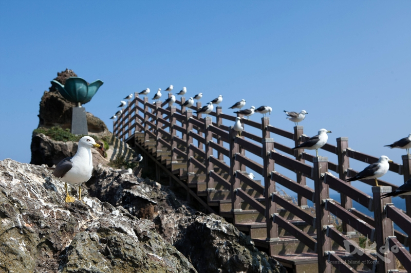
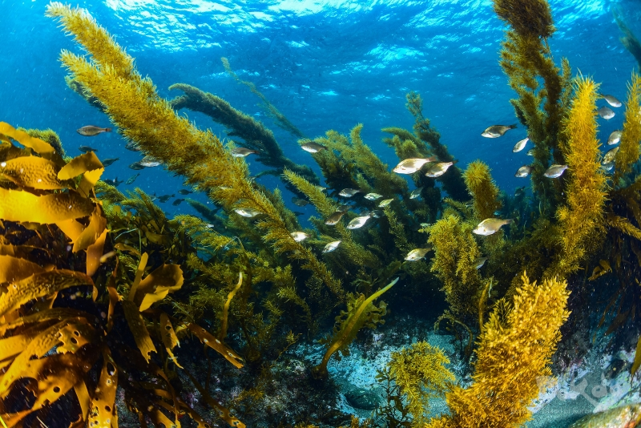

dokdo,
island of
korea
홈
하위 메뉴 토글 버튼
독도란?
하위 메뉴 토글 버튼
갤러리
하위 메뉴 토글 버튼
문의사항
하위 메뉴 토글 버튼
전체 메뉴 토글 버튼
이전 버튼
다음 버튼

괭이갈매기

불볼락 떼
인기 검색어
독도
독도의 유래
동해 바다
독도 가는 법
울릉도
천연기념물
독도 거주
독도경비대
독도 기후
독도 새우
최근 글
독도가 우리나라 땅이라는 증거...
독도 가는 방법을...
독도에 대해서...
독도의 가치는 무엇이...
독도의 사회적 가치는...
인기 글
독도가 우리나라 땅이라는 증거...
독도 가는 방법을...
독도에 대해서...
독도의 자연환경은...
독도의 사회적 가치는...